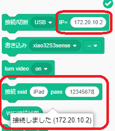
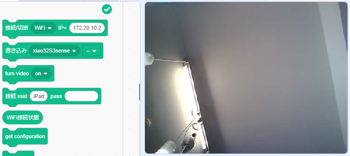

つくるっちアプリ
プログラミングアプリ「つくるっち」について
- http://sohta02.sakura.ne.jp/tukurutch/ （サンプル一覧）
- つくるっちは小学生から大人までのプログラミング学習と電子工作を目的に、そーたメイが開発したスクラッチ3.0ベースのオープンソース、フリーウェアのプログラミング環境です。ArduinoIDEのようなオープンソースソフトウェアによる様々なマイコンと周辺デバイス対応を目指しています。
WiFiセットアップ
- ★重要★chromeブラウザでのアクセスについて
つくるっちアプリをアクセスするときアドレスバーをクリックしてhttps からhttp に変更してください。
下図のようにURLの左側のアイコンが！になっていればOKです。
NG：
OK：
この手順は次のchromeブラウザ設定２のあとに行ってください。
数年前からchromeブラウザではhttpサイトを開こうとすると自動的にhttpsに変更されていました。2024/3まではブラウザ設定 #https-upgrades をdisable設定することで無効にすることができたのですが、2024/4にこの設定が無くなってしまいました。 - chromeブラウザ設定２(insecure origin)
下記アドレスをコピーしブラウザのアドレスバーに貼り付けて開く。
をコピーし、ブラウザに貼りつけ[Enabled] を選択してRelauch。

この設定の後、ブラウザ起動で毎回下記warningが出ます。
- デバイスをUSBでPCに接続、QuadCrawlerAI新規プログラム にアクセス。
サイトを開いた後、https をhttp に変更してください。
NG：
OK：
- ファームウェア書き込み：[書き込み] をクリック、
「xxがシリアルへの接続を要求してます」が表示されるので USB Serial Port (COM x) を選択。 - USB接続.
[接続/切断] で [USB] を選択・クリックしてデバイスと接続。
「xxがシリアルへの接続を要求してます」が表示されるので USB Serial Port (COM x) を選択。
- WIFI設定.
SSIDとパスワードを入力して [接続 ssid] をクリック。成功すると [接続/切断] にIPアドレスが設定されます。

2.4GHzのアクセスポイントにしか接続できません。
- WIFI接続.
[接続/切断] で [WIFI] を選択・クリックしてデバイスと接続。
カメラ画像が表示されればOKです。

- この状態でカメラの画像をパソコンで表示しながら付属の赤外線リモコンでロボットを操作することが出来ます。様々なサンプルプログラムはこちらになります。
- もう一度IPアドレスを確認・設定するときはUSB接続してQuadCrawlerAI新規プログラムにアクセスし、[接続/切断]でUSBを選択しデバイスと接続。を押して下さい。
パソコンからリモート操縦
赤外線リモコン以外にパソコンのキーボードからロボットを操縦することができます。
- WiFiセットアップを完了した状態で下記のサイトを開いてください。
操縦アプリ - キーボードの上下左右カーソルキーを押して下さい、ロボットが前後左右に動きます。
- キーボードのz, xキーを押して下さい、ロボットが左右に回転します。
- パソコン画面の上下左右キー、パソコンに接続したゲームパッドでもロボットを操縦することが出来ます。
画像認識に挑戦！
ロボットソースコード、FW開発環境
- ロボットFWの開発環境としてつくるっちexeをリリースしています。
http://sohta02.web.fc2.com/familyday_exe.html - ロボットのソースコードは下記で公開中です。
https://github.com/sohtamei/TuKuRutch.ext/tree/master/libraries/QuadCrawlerAI
WiFiで接続できないとき
- 現在Chromeブラウザのみ対応です、Firefox/Edge/Safariブラウザでは動作しません。
- USB接続でIPアドレスを確認＆再設定
WiFiセットアップの 4 からやり直して下さい。